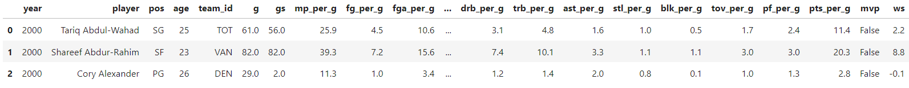
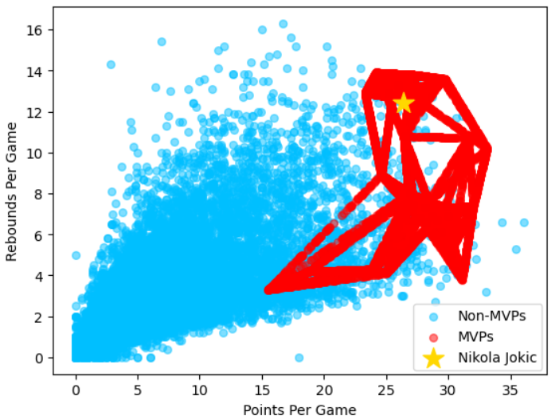
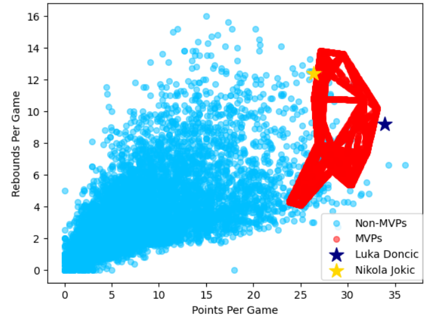

At the conclusion of every NBA season, the Most Valuable Player award is given to the best player in the basketball league. It is perhaps the most prestigious individual award one could get in the realm of basketball worldwide. Every year analysts and talk-show hosts argue about who is deserving to be the NBA and they make their predictions based on some key statistics and what they have seen from the candidates over the season. The goal of this research is to create a model that can accurately make this prediction using some of the same statistics analysts use to make their arguments. Since the MVP award is only given out once per year, there will be a major imbalance in the data, and this will be accounted for through the use of SMOTE and ADASYN for data generation. Modeling the resulting synthetic data with a K-Nearest Neighbors algorithm based on USEARCH yields reasonably accurate results is shown to provide a reasonable amount of accuracy when predicting the NBA MVP.
In a previous project by Gabriel Pastorello, the MVP winner was predicted using a metric called MVP shares which represents the amount of the MVP votes a particular player received. An imbalance in the response variable was identified, but Pastorello used domain knowledge to eliminate observations in order to balance the data. After the data was processed, six different models were trained: Support Vector Machines, Elastic Net, Random Forest, AdaBoost, Gradient Boosting, and Light Gradient Boosting Machine. This model was unsuccessful in predicting the 2023 MVP, however.
This paper aims to refine some of the techniques used in Pastorello’s study. First, instead of using MVP shares as a metric for the response variable, a binary response of whether or not a player won the MVP will be used. Then, to avoid throwing useful data away, synthetic data generators, SMOTE and ADASYN, will be used to address class imbalance. From there, several K-Nearest-Neighbors models will be used to predict the MVP winner. These models will contain different feature combinations and some engineered variables.
The data that will be used has been scraped from www.basketball-reference.com. The data includes individual player statistics as well as whether or not the player won the MVP since the year 2000 up through last season in 2023. In total there are 11,526 observations and 31 features. For the sake of this paper, seven of these features will be used: points per game (ppg), rebounds per game (rpg), assists per game (apg), steals per game (spg), blocks per game (bpg), and win shares (ws). The ‘per-game’ features are the average number of a given statistic a player contributes to his team per game. For example, a player who scored a total of 40 points after five games would have an average of 8 ppg. These variables are positive and continuous. Win shares is a metric that was created to represent how many wins over the course of a season that a team is expected to gain just by having the given player on their team. Win shares is a continuous variable that can be positive or negative. Finally, whether or not a player won the MVP will be the response variable. 1 will represent an MVP and 0 will represent a player who did not win the MVP.
Due to the fact that the MVP award is only given out once per year, their is a large class imbalance in the response variable. There are 11,502 non-MVP’s and only 24 MVP’s. As previously mentioned, this will be addressed with SMOTE and ADASYN.
The original dataset was quite clean, so no observations or features needed to be removed. Using domain knowledge, the following features were selected because of their significance in predicting the MVP: points per game (ppg), rebounds per game (rpg), assists per game (apg), steals per game (spg), blocks per game (bpg), and win shares (ws). From those variables, new features were engineered including apg x rpg, spg x bpg, and ppg x rpg x apg. The reasoning for these features will be discussed with the introduction of their involved models.
A total of ten models were trained using a K-Nearest-Neighbors algorithm based on USEARCH. KNN has been a popular model in the NBA analytics community for comparing players. The value in the model comes from the fact that the analysis of its results is highly intuitive. Player comparisons can be made by simply looking at a given player’s ‘closest neighbors’ based on chosen input variables. In this study, KNN models with several different input variable combinations will be used to determine the proportion of a given player’s neighbors that are MVP’s. The player in the test data with the highest proportion of neighbors that are MVP’s will be predicted to be the MVP. In each of the ten models, the 500 closest neighbors are originally used to determine this proportion. If their is a tie in the proportion of MVP neighbors between multiple players, the model is retrained using 100 additional neighbors. 100 additional neighbors will iteratively be added to the model until the tie is broken and an MVP is decided.
The features will be standardized using a method that is proven to be optimal through iterative trial and error. The three standardizing methods that will be examined are StandardScaler, MinMaxScaler, and QuantileTransformer.
The ten models can be divided into three groups:
Group 1:
Group 1 contains three models that were trained on the entire dataset of observations. The models vary in their selected features and standardization methods.
Model 1 was trained with three features: ppg, apg, and rpg. These three features were chosen because they are often considered to be the most important to consider when determining the quality of a basketball player. The StandardScaler was used to standardize these features.
Model 2 was trained using two features: ppg and apg x rpg. The apg x rpg feature was engineered due to the fact that certain players play a position where they are more likely to get rebounds, while others play a position where they are more likely to get assists. The range in per game averages for the two are similar, so by multiplying them we can normalize for differences from position to position. This accounts for the fact that some MVP’s have been point guards who average very few rebounds and a lot of assists, while others have been centers who average very few assists and a lot of rebounds. The MinMaxScaler was used to standardize Model 2’s features.
Model 3 was trained using three features: ppg, apg x rpg, and spg x bpg. The spg x bpg feature was engineered for a similar reason as the apg x rpg feature. Positional differences cause some players to get more steals and less blocks, while others are more prone to getting more blocks and less steals. This feature was added to represent the role of defense in determining a quality player. This accounts for past MVP’s who have been more defensive-minded players. The QuantileTransformer was used to standardize Model 3’s features.
Group 2:
Group 2 contains three models that are trained on data from after 2007. This distinguishment was made due to changes in rules and innovation from coaches that have caused basketball to be a more fast-paced and high scoring game. By using data from after 2007, the MVP’s in the dataset are a more accurate depiction of what a modern day MVP would look like. In Group 1, MVP’s from before 2007 were causing a lot of the synthetic data generated from ADASYN and SMOTE to be misrepresentative of what an MVP’s stats should look like with the current state of the NBA. This can be seen in the figure above where there is a streak of synthetic MVP data coming away from the main MVP cluster, towards lower points per game and rebounds per game. This is likely due to Steve Nash who won the award in 2005 while averaging 15.5 points, 11.5 assists, and 3.3 rebounds. In the modern NBA, this statline would almost certainly not result in the MVP award. The feature selection in the models in this group are the same as Group 1.
Model 4 was trained with three features: ppg, apg, and rpg. The MinMaxScaler was used to standardize these features.
Model 5 was trained using two features: ppg and apg x rpg. The StandardScaler was used to standardize these features.
Model 6 was trained using three features: ppg, apg x rpg, and spg x bpg. The QuantileTransformer was used to standardize these features.
By creating synthetic data based on statistics from after 2007, the region of the MVP winners on the graph becomes much more concentrated. This is both easier to predict and more representative of the current NBA.
Group 3:
Group 3 contains four models that were again trained on data from after 2007. Group 3 can be distinguished from Group 2 by its introduction of win shares as an explanatory variable. Win shares was added as a feature to describe whether or not a given player was part of a successful team. A player with a high number of win shares is highly likely to be a part of a successful team, which is a key factor in determining the MVP. Many players will have the same kind of numbers as one may expect an MVP to have, but if they are on a losing team, it is not likely such a player would win the award. The introduction of win shares is meant to separate those players from the ones who are on successful teams and have a chance at winning the MVP.
Model 7 was trained using four features: ppg, apg x rpg, spg x bpg, and ws. The QuantileTransformer was used to standardize these features.
Model 8 was trained using three features: ppg, apg x rpg, and ws. The StandardScaler was used to standardize these features.
Model 9 was trained using four features: ppg, apg x rpg, spg x bpg, and ws. The QuantileTransformer was used to standardize these features.
Model 10 was trained using two features: ppg x apg x rpg, and ws. The ppg x apg x rpg variable was added here to separate well-balanced players from those who excel at only one or two aspects of the game. The StandardScaler was used to standardize these features.
Each of the ten models was trained using both ADASYN and SMOTE separately.
Synthetic data will be generated for each model based on their respective features. Adaptive Synthetic Sampling (ADASYN) and Synthetic Minority Oversampling Technique (SMOTE) will be used to generate data for the minority class of MVP winners. To avoid data leakage during the validation process, synthetic data will be made from each training set and will not be based on data from the test set.
An adapted K-Fold cross validation procedure was used to validate the models. The adapted K-Fold makes folds in the data based on years where each year will be used separately as test data while the other years will be used as training data. Based on the training data, synthetic data will be generated with ADASYN and SMOTE. The KNN model will then be trained on the training data, and will predict the MVP for the given year in the testing data. After every year has been tested on, an accuracy score will be recorded which is determined by the proportion of years the model correctly predicted the MVP for.
Each model was used to make predictions for the 2024 NBA MVP. For the Group 1 models, synthetic data was created based on all observations in the original dataset, while the synthetic data for the Group 2 and Group 3 models were based on all observations after 2007. The necessary regular season player data from the 2024 season was then obtained and used as the testing set. Each model was used to make a prediction out of the entire testing set, as well as a prediction out of the three remaining candidates: Nikola Jokic, Shai Gilgeous-Alexander, and Luka Doncic. An ensemble approach will be used to decide a final MVP prediction. Each prediction will count as a vote, and the player with the most votes will be the final prediction for the 2024 NBA MVP.
The overwhelming majority of votes has decided on Nikola Jokic as the 2024 NBA MVP.
All ten models seem to have reasonable accuracy. Even when choosing from the entire field of MVP-eligible NBA players the models collectively narrowed it down to four players. The four players that the models narrowed it down to are widely considered to be the top four candidates for winning the award this year. The models’ final prediction, Nikola Jokic, is widely regarded as the odds on favorite to win the award this year, further indicating their accuracy. Because of this consistency, it appears the model creation process was a success.
One way to expand upon these results would be to add a validation metric to the validation process. It would be highly useful to add a metric that records the accuracy from the K-Fold cross validation in predicting the MVP winner out of the top three candidates as test data. Right now, the accuracy score is being recorded based on predictions out of all players from a given year instead of just the candidates. Since the model is trying to single just one player out from around 600, the accuracy is going to be low. Testing the model out of just the top three candidates might be helpful in gaining intuition for how well the models are fit.
An additional way to take these results further would be to try out logistic regression as a model. A lot of the data has linear relationships where a higher number in a given stat will result in a higher probability in winning the MVP. Because of this, logistic regression may be a useful model.
Finally, using FastKDE to generate synthetic data would be of interest. FastKDE was not used for the models in this paper because of its time complexity. Making FastKDE synthetic data for each fold in the K-Fold cross validation would have been extremely time consuming and inefficient in reaching the goals of this research. However, FastKDE is known to be even more reliable than ADASYN and SMOTE for creating synthetic data, so it would be interesting to see if it would provide any increases in accuracy.
The NBA MVP will be announced at 7:30pm on May 8th and will provide evidence for the accuracy or inaccuracy of the models.